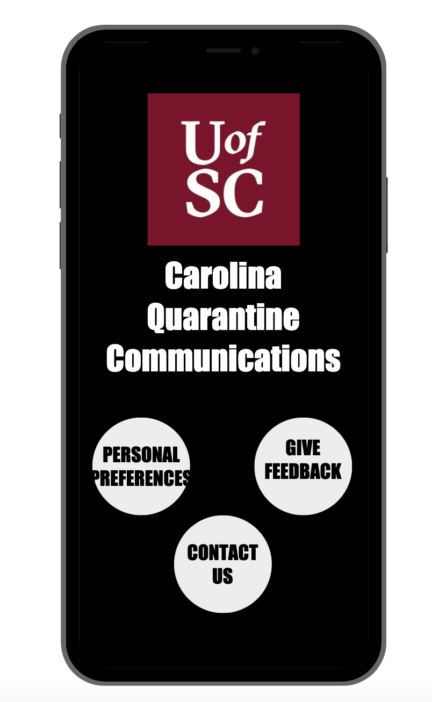

Problem Statement: Meals for Quarantined College Students

Students in on-campus housing are not receiving meals that meet their daily dietary restrictions/preferences while in quarantine. The users need a way to communicate their specific dietary needs to the school to allow them to get healthy and appropriate meal options while recovering from COVID-19. Our solution should allow them to customize meals, indicate dietary needs, and choose between meal options for breakfast, lunch, and dinner.
Affinity Diagram
Our group brainstormed and created a collection of sticky notes relating to our project.
Persona: Four Personas for Isolation Meal Recipients

Our group created personas of a typical college quarantine meal recipient.
Stoaryboard: Four Storyboards for Quarantine Meal Plan App

Our group created comic strips that illustrate the need for our quarantine meal planner.
Sketches: Quarantine Meal Plan App
Everyone in our group created a sketch that illustrates an app solution for our quarantine meal planner.
Paper Prototype: Quarantine Meal Plan App
I created a paper prototype which can be used to ideate my group's quarantine meal planner.
Usability Testing: Quarantine Meal Plan App
I created one scenario with three tasks and compiled the outcome of my usability tests.
Lo-fi Prototype: Quarantine Meal Plan App
My team and I created a low-fi prototype of our qauarantine meal plan app.
Hi-fi Prototype: Quarantine Meal Plan App
My team and I created a hi-fi prototype of our qauarantine meal plan app.
Final Presentatoin: Quarantine Meal Plan App
My team and I created a five minute video to present our qauarantine meal plan app.